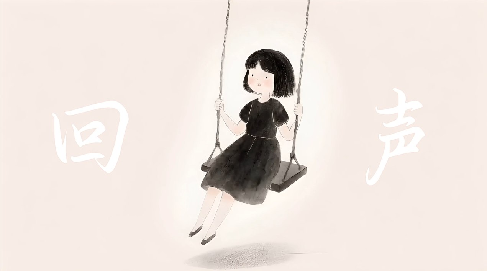
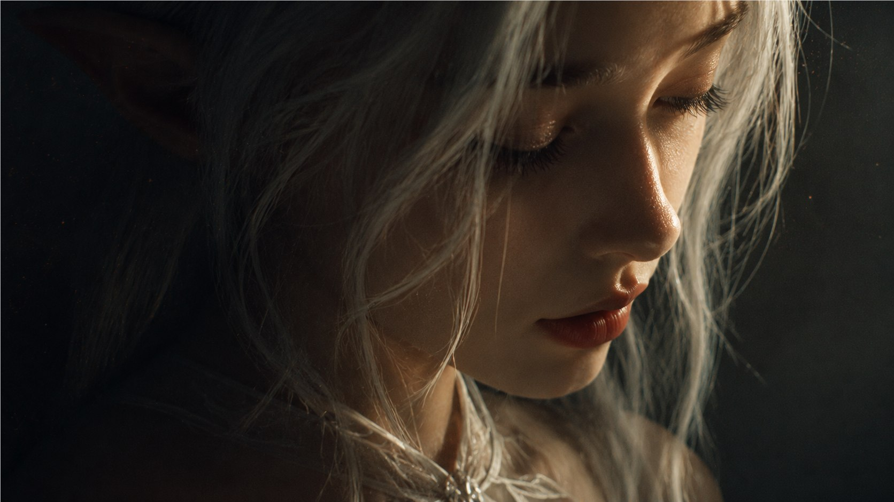

从产品与经营问题出发，用视觉建立卖点、食欲感与品牌识别。
从产品本身和真实经营需求出发，让每一个视觉决定都有清晰的传播目的。
从产品的密封保存出发，提炼“封存新鲜，开启释放”的传播概念。
保留超长造型的注意力，把重点落在原料、酥皮与蛋奶馅的产品质感上。
围绕进店、下单与品牌信任，建立统一的餐饮视觉与外卖应用。
通过产品包装、饮用场景与信息层级，完成清晰直接的电商主图。
用影像回应地域文化、现实议题与个人感受。
以嘉定地域文化与非遗技艺为主题的城市短片。

关于校园暴力的公益动画作品。

关于自由、身体与自我感知的影像实验。
参与 8 部、约 280 集漫剧生产，覆盖剧本分析、视觉设计、素材生成、动态处理、剪辑与配音。
根据剧情重点分配制作资源，并将关键帧处理方法整理为教程，在团队内部推广复用。
你好，我是朱青，一名关注商业视觉与影像创作的设计师。我希望从产品本身和真实经营需求出发，让每一个视觉决定都有清晰的传播目的。